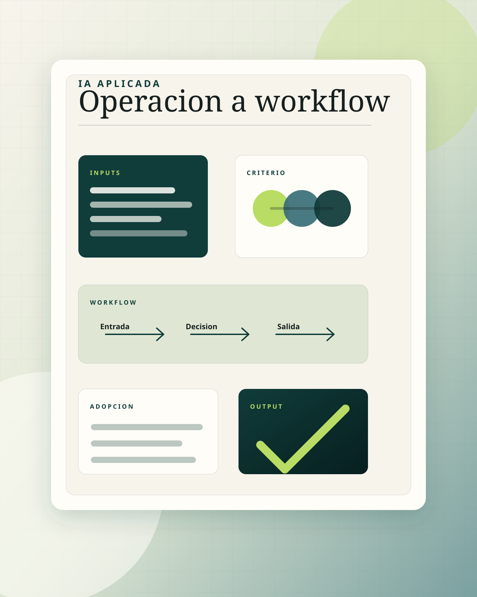

Prompts aislados
Alguien prueba algo, sale una demo interesante y luego nadie sabe cuándo usarlo ni quién mantiene el proceso.
Trabajo con empresas que quieren avanzar con IA sin contratar un equipo interno ni arrancar con una implementación pesada. Me integro con tu equipo para entender la operación, priorizar oportunidades y convertir herramientas como ChatGPT, Claude o Gemini en procesos útiles, medibles y adoptados.

La IA sirve cuando queda conectada a una entrada, una decisión, un responsable y una salida que el equipo realmente usa.
El problema
El problema no suele ser falta de herramientas. Es falta de contexto, criterio y continuidad para meterlas en el trabajo diario sin romper la operación.
Alguien prueba algo, sale una demo interesante y luego nadie sabe cuándo usarlo ni quién mantiene el proceso.
La operación sigue dependiendo de seguimiento manual, archivos dispersos y personas que cargan demasiada memoria del negocio.
Comprar software no basta. Hay que adaptar la herramienta al flujo real, documentarlo y acompañar al equipo.
El enfoque
Las empresas grandes ya están creando equipos forward-deployed de IA para llevar modelos al trabajo real. Mi enfoque baja esa lógica a empresas mexicanas: menos fricción, ciclos cortos y avances visibles desde el primer mes.
Cómo funciona
El trabajo empieza cerca del equipo. Primero se entiende cómo se hacen las cosas hoy; después se eligen pocos frentes con valor y se convierten en rutinas que sí se pueden usar.
Procesos, herramientas, equipo, dolores, excepciones y oportunidades reales.
Elegimos 1 a 3 workflows donde IA puede mover la operación sin meter complejidad innecesaria.
Creamos prompts, plantillas, automatizaciones ligeras, playbooks o prototipos según el caso.
Dejamos claro quién lo usa, cuándo, con qué input, qué output produce y cómo se mejora.
Si hay más valor, seguimos con acompañamiento mensual o separamos sprints específicos.
Formas de empezar
Empezamos con un ciclo de 30, 60 o 90 días. Si el valor aparece, podemos continuar con acompañamiento mensual o separar sprints específicos.
Para empezar rápido, detectar oportunidades y activar primeros workflows sin comprometerse a una implementación grande.
Para trabajar más cerca del equipo, atacar 1 a 3 frentes reales y dejar procesos funcionando en la rutina.
Para mantener una función externa de IA aplicada mes a mes, con criterio, seguimiento y mejora continua.
Lo que no es
La oferta está diseñada para empresas que quieren usar IA con seriedad, no para perseguir demos que se ven bien y mueren al lunes siguiente.
Sobre Rogelio
Soy Rogelio Guzman. Trabajo con empresas que quieren aplicar IA de forma práctica, sin perderse en hype ni sobredimensionar soluciones.
Mi enfoque combina criterio operativo, herramientas modernas y acompañamiento cercano para que la IA llegue al trabajo real del equipo: reportes, documentos, análisis, coordinación, minutas, seguimiento, Excel, comunicación interna y automatizaciones ligeras.
Donde suele entrar
El mejor primer caso normalmente no es el más espectacular. Es el que se repite, consume tiempo y se puede mejorar sin cambiar toda la empresa.
Convertir reuniones, decisiones y pendientes en continuidad real.
Pasar de archivos dispersos a salidas claras para decidir mejor.
Dejar instrucciones, plantillas y rutinas que la gente pueda repetir.
Siguiente paso
En 30 minutos podemos identificar si hay un frente real para IA aplicada, qué tan pesado sería empezar y cuál sería el primer ciclo con menor fricción.